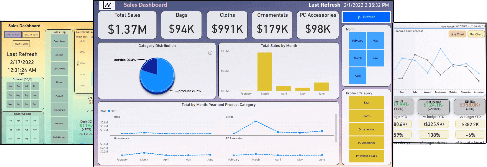
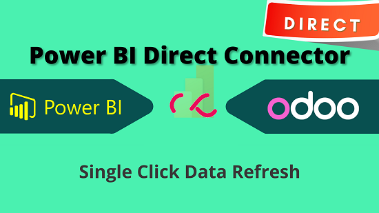
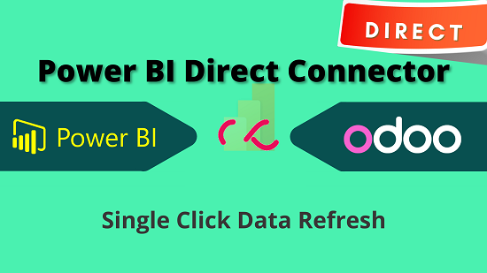

Connects your Odoo directly to Power BI Desktop. Works on Odoo Sh as well!
The module helps you connect your Odoo (Odoo Sh as well) to Power BI Desktop. This is direct connection of your odoo with power bi with single click refresh feature. This free module documentation only. If you want to get a lifetime access, you can buy the module from our website www.techneith.com It is a one-time price that you pay and enjoy the module for lifetime. If you wish to try the module before buying we will provide you a free trial.
https://www.techneith.com/products/odoo_power_bi_direct_connector/
or
 


This is just a documentation. If you wish to buy or try for free the actual module visit techneith.com

You get to see ALL your Odoo data in Power BI (even custom modules data)

One click setup on Windows with Secure and Signed Connector EXE

Refresh any data change in Odoo from Power BI Desktop in a Single Click

Select as little and as much Data/Tables you want to load.

Unique token based connection with your Odoo, hence no security risk.
Note : This connector is direct connection of Power BI Desktop with your Odoo Server. We have used T2.MEDIUM server for this test, transfer speed can be significantly fast depending on your server configuration. Tables with fewer columns will take only fraction of what above benchmark shows. Even if you have a HUGE DATA this connector can load it without failing or without missing a single record.
Techneith Connector connects Power BI and Odoo using the URL and unique Token generated by "Power BI Direct Connector" on your Odoo.
Enter URL & Token generated in Odoo here and connection is setup. Just simple as that.
Get List of all tables in Odoo (even Custom Modules tables). Select the tables you want Data from and click Load to proceed.
You can apply operations on tables to get customized data. Click "Transform Data" to begin.

Refreshing Data and reflecting any change is just a work of single click.
Click on Refresh in Power BI and all changes in Odoo Data will be reflected.
We needed an API to connect ODOO with PowerBi and this was just it. It works great and it has been really useful for our business.
We would really recommend this connector and for sure we will be getting some more products from Techneith in the near future.
It was an excellent purchase. I consider it to be the best Power BI connector on the market. Even better has been the customer service given by Techneith, always available to answer any questions.
Recommended product
I have used this connector for one of my custom CRM applications and its serves the purpose. great connector to have with my app.
The connector has been working as advertised and the support team was very quick to respond and able to provide on call resolution of any questions. I highly recommend this product!
With the help of the Techneith team we configured the module easily! The features are basically unlimited and its a much better option than to extend the standard report tools in Odoo. Before we used to customize these reports by adding fields and measures but with this powerbi connector this is something we wont do anymore. Very nice feature and with great support.
Thanks to Nikhil and team for getting the PowerBI connector working for our customer. Looking forward to seeing the dashboard now for some real results using PowerBi....
This API woks perfectly. We had some issue and Techneith help us very quickly and professionally. I recommended definitly this product and this company.
Seems to work well and very helpful, fast support when needed.
Their customer service is great. They can solve all your questions quickly and simply. Thank you!
Seems to work well and very helpful, fast support when needed.
Super helpful support team and the app works extremely efficiently.
Great app and very quick and helpful support.
FAQ?
We have sold our connector on odoo app store for around two years. We are the only company with direct odoo to power bi connector, to avoid copying of our product we have moved our sales to our own website techneith.com from January 1st, 2023.
You can drop a mail at info@techneith.com
Yes. It supports all Odoo versions such as 12, 13, 14, 15 and works on Odoo sh as well.
Yes, it supports both Community and Enterpise versions.
Yes, if you chose to upgrade your odoo to a different version then you wil have to buy again but feel free to get in touch with us directly during the upgrade and we might give you a discount on the same considering the fact that you have been a loyal customer already using our module.
No. The connector works only on Power BI Desktop. For Cloud version, Power BI does not offer any tool to develop our custom connector thus, we cannot provide a connection with Power BI Cloud.
We have recorded the demo in the youtube ( https://www.youtube.com/watch?v=AJw4fMPk6Rs ) so that everyone can see the demo and buy the module directly rather than asking us. For any further enquiry or demo visit www.techneith.com or mail us at info@techneith.com.
Yes. The connector can be used on 1 Odoo instance only and not multiple instances. If you have multi-company setup in your Odoo, the connector will work fine and you will see the data of all companies in power bi.
The current connector will not allow you to schedule automatic refresh of data but it is easy to do refresh manually using the “Refresh” button on Power Bi Desktop. We have an advanced connector which can help you refresh data directly from dashboard and schedule automatic refresh as well however, please note that you might need to host your Power BI on a windows server if you want to publish reports and be available for others. This is not because of our connector but a generic requirement as you want others to access reports, thus, you have to host Power BI on a server so that it can be available all time. If you are interested in the advanced connector feel free to get in touch with us at info@techneith.com or if you are using this connector and want to upgrade to advanced version at later point that is also easily possible.
Yes, our team consists of Power BI developers too so if you need help with building a dashboard we can surely do so.
For any kind of Query or Support reach us at